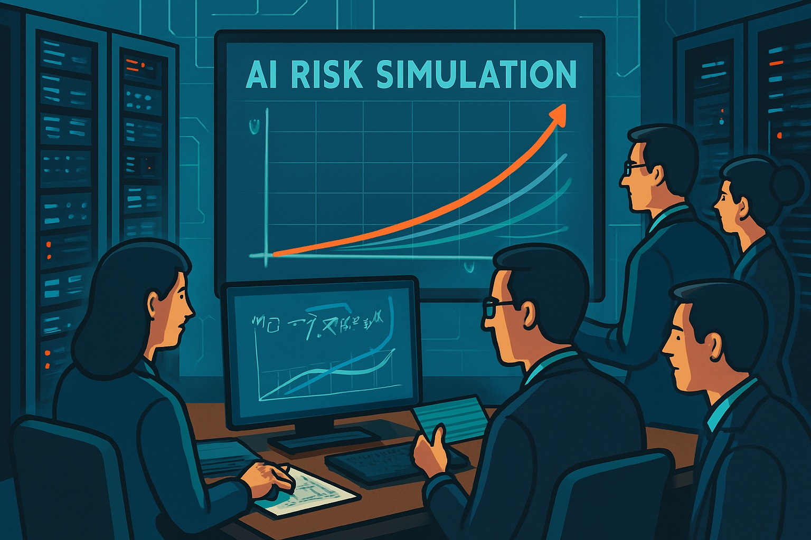
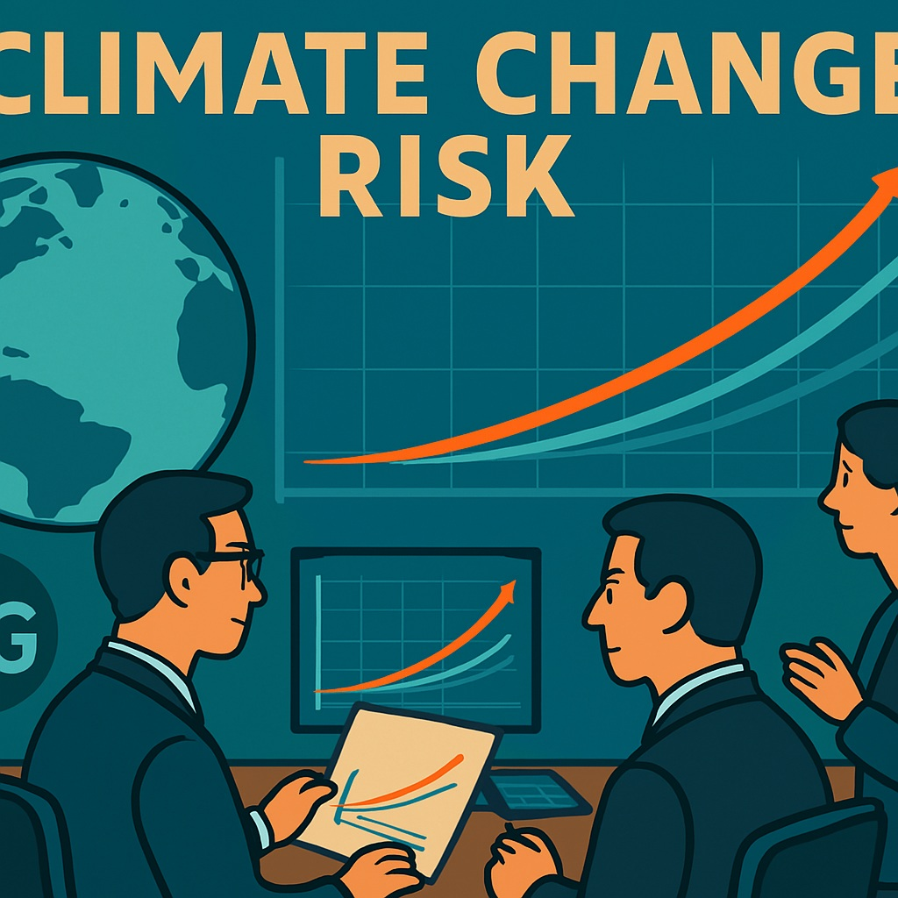

21세기는 기술 폭발과 글로벌 위기(금융 위기, COVID-19, 기후 변화)로 보험계리학이 급변한 시대입니다. AI와 빅데이터로 무장하여, 사망률 계산에서 지속 가능성 리스크로 확장되었습니다.
2008년 글로벌 금융 위기는 리스크 모델을 강화하였습니다. 보험계리사들이 Basel III(2010)에 기여하며 자본 요구사항을 개선하였습니다. 빅데이터로 telematics 보험이 등장하였습니다.
그림 8.1: AI 기반 위험 시뮬레이션, 2024
2016년 Solvency II는 유럽 보험 규제로, AI 등 첨단 위험 평가 기법의 도입을 촉진하고, 내부 모델 사용 기준을 강화했습니다.
2023년 IFRS 17은 보험 계약의 위험 평가를 투명화하였습니다.
2020년 COVID-19 팬데믹은 실시간 mortality modeling을 촉진하였습니다. SOA가 연구를 주도하며 stochastic models을 강화하였습니다.
2024~2025년 Generative AI와 ESG 중심의 기후 모델 개발이 본격화되었습니다.
그림 8.2: 기후 변화 리스크 모델링, 2025
이 시기의 공통 테마는 융합과 적응입니다. 보험계리학은 AI를 통해 새로운 전기를 마련하고 있습니다.
| 연도 | 주요 제도/사건 | 설명 | 보험계리학과의 연관성 |
|---|---|---|---|
| 2008 | 글로벌 금융 위기 | 리스크 모델 강화, Basel III 기여 | 금융 안정성 모델링의 재평가, 자본 요구사항 |
| 2016 | Solvency II 시행 | 유럽 보험 자본 규제, AI 활용 | AI 기반 위험 평가 기법 촉진 |
| 2020 | COVID-19 팬데믹 | 실시간 mortality modeling, SOA 연구 | 팬데믹 리스크 예측 혁신, stochastic 모델 |
| 2023 | IFRS 17 시행 | 보험 회계 표준, 리스크 회계 | 투명한 리스크 회계 체계 |
| 2024-2025 | GenAI 통합 & ESG 포커스 | AI 사례 연구와 기후 모델 | 지속 가능성과 기술 융합 |
| 2025 | 데이터 사이언스 융합 | 직업 시장 트렌드(AI·기후) | 글로벌 협력과 윤리 표준 강화 |